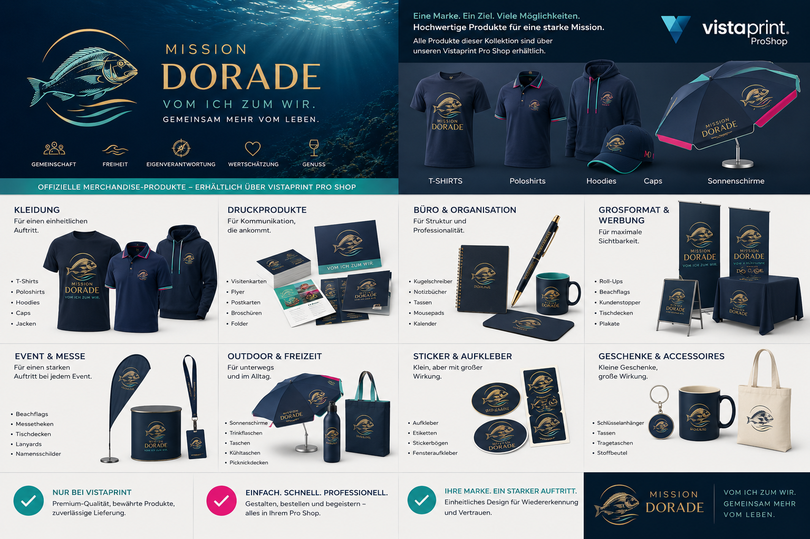

Ocean Collection
Premium T-Shirt
Hauptmotiv vorne; zwei fest definierte Rückseitenvarianten.
VistaPrint-Prüfung vorgesehen
Die bestehende Marken- und Produktwelt als kompakte, präsentierbare Shop-Demo. Der Start konzentriert sich ausschließlich auf Mission Dorade und auf zehn ausgewählte Produkte.
Bewusst klein gestartet: Kleidung, Alltag und mobile Sichtbarkeit. Preise, Varianten, Druckflächen und Veredelungen werden anschließend verbindlich mit VistaPrint abgestimmt.
Hauptmotiv vorne; zwei fest definierte Rückseitenvarianten.

Dezentes Brustlogo mit festgelegten Akzentfarben.

Navy mit Mission-Dorade-Logo und klarer Motivposition.

Kompaktes Dorade-Icon für Alltag und Veranstaltungen.

Großflächige Sichtbarkeit im Außenbereich.

Für Ziele, Kontakte, Ideen und Ergebnisse.

Passendes Schreibgerät zur Notizbuch-Serie.

Täglicher Erinnerungsanker im Mission-Dorade-Look.

Praktischer Begleiter mit sichtbarer Markenwirkung.

Für unterwegs, Workshops und gemeinsame Aktivitäten.
Die beiden Aussagen werden ausschließlich als Rückseitenvarianten der Mission-Dorade-T-Shirts eingesetzt. Sie erscheinen nicht als allgemeine Shop-Slogans.
Dabei sein ist alles.
Rückseitenvariante 1Frag mich.
Rückseitenvariante 2Diese Shop-Version zeigt die gewünschte Mission-Dorade-Produktwelt. Verbindlich in den Shop übernommen werden nur Produkte und Ausführungen, die VistaPrint tatsächlich liefern kann.
